Merit Shop (공적 상점) 및 태스크 개요
이 가이드는 Merit Board (공적 게시판) 레시피를 구매하는 최적의 순서를 안내합니다. 이 태스크 게시판 장비 해금 시스템은 월드 및 일일 행동을 완료하여 얻은 트로피를 사용하며, World 1부터 World 4까지의 최고 장비를 획득할 수 있도록 합니다. 이 메커니즘은 Merit Shop 시스템과 밀접하게 연관되어 있습니다.
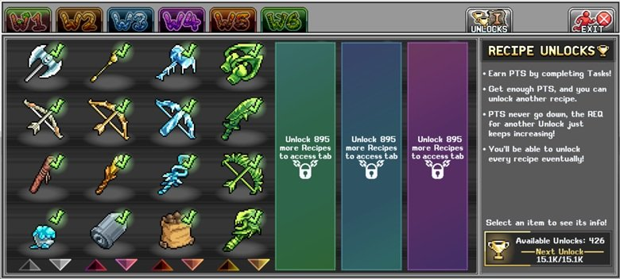
- 진행 상황은 계정의 모든 캐릭터에서 공유됩니다.
- 플레이어는 월드별 테마 챌린지와 일일 과제를 완료하여 트로피(또는 포인트/PTS)를 획득하고, 이를 레시피 해금 화면에서 사용합니다.
- 일일 챌린지는 매일 Idleon 초기화 시간에 갱신되며 트로피만 획득할 수 있습니다. 합리적인 시간 안에 모든 것을 해금하기 위해 중요한 요소입니다.
- 코덱스 빠른 참조를 통해 태스크 완료를 수령할 수 있으므로 각 월드의 태스크 게시판을 직접 방문하지 않아도 됩니다.
- 트로피를 충분히 모으면 레시피 해금을 얻을 수 있으며, 이를 무제한으로 쌓아둘 수 있지만 다음 해금 단계에는 이전보다 더 많은 트로피가 필요합니다.
- 더 높은 레시피 해금 단계에 접근하려면 이전 단계에서 일정 수의 레시피를 먼저 구매해야 합니다(7개, 22개, 60개). 따라서 처음에는 모든 단계에서 가장 좋은 아이템만 구매한 후 나머지로 돌아오는 것이 가장 효율적입니다.
- 대부분의 레시피 해금은 두 가지 다른 아이템을 제공하며, 레시피 해금 화면에서 아이템을 클릭하여 확인할 수 있습니다. World 4까지의 레시피를 해금하는 주요 방법입니다. 이후(World 5 이후)에는 모루 레시피가 몬스터에게서 드롭됩니다.
태스크 레시피 해금 우선순위
이 레시피 해금 순서를 따르면 필요한 모루 레시피를 효율적으로 해금할 수 있습니다. 특히 트로피 PTS가 부족한 World 1과 World 2 초반에 중요하지만, 더 많은 일일 태스크에 접근할 수 있는 World 3과 World 4에서는 가용량이 증가합니다. 이 순서는 무기, 스킬링 도구, 유틸리티, 젬 구매 순으로 우선순위를 두며, 이전 탭의 모든 것을 먼저 해금하지 않아도 되도록 탭이 섞여 있습니다.
| 해금 아이콘 | 포함된 해금 아이템 | 탭 |
|---|---|---|
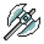 Steel Axe | 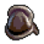 Militia Helm | 첫 번째 |
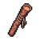 Quarterstaff | 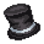 Top Hat | 첫 번째 |
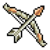 Birch Longbow | 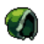 Thief Hood | 첫 번째 |
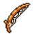 Copper Fish Rod | 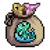 Cramped Fish Pouch | 첫 번째 |
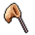 Copper Netted Net | 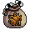 Cramped Bug Pouch | 첫 번째 |
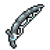 Iron Fishing Rod | 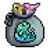 Small Fish Pouch | 첫 번째 |
| Reinforced Net | 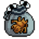 Small Bug Pouch | 첫 번째 |
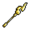 Royal Bayonet | 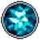 젬 25개 | 두 번째 |
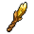 Starlight | 젬 25개 | 두 번째 |
| Spiked Menace | 젬 25개 | 두 번째 |
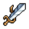 Enforced Slasher | 젬 25개 | 두 번째 |
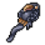 Crows Nest | 젬 25개 | 두 번째 |
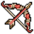 Pharaoh Bow | 젬 25개 | 두 번째 |
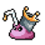 Slurpin Herm | 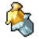 Buttered Toasted Butter | 두 번째 |
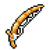 Golden Fishing Rod | 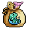 Average Fish Pouch | 두 번째 |
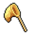 Golden Net | 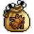 Average Bug Pouch | 두 번째 |
| Gold Pickaxe | 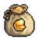 Average Mining Pouch | 두 번째 |
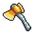 Golden Axe | 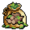 Average Choppin Pouch | 두 번째 |
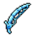 Plat Fishing Rod | 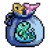 Sizable Fish Pouch | 두 번째 |
| Platinet | 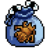 Sizable Bug Pouch | 두 번째 |
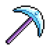 Platinum Pickaxe | 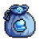 Sizable Mining Pouch | 두 번째 |
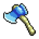 Plat Hatchet | 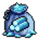 Sizable Choppin Pouch | 두 번째 |
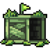 Natural Traps | 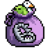 Big Critter Pouch | 세 번째 |
| Prickle Skull | Big Soul Pouch | 세 번째 |
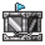 Steel Traps | 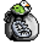 Large Critter Pouch | 세 번째 |
| Manifested Skull | 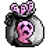 Large Soul Pouch | 세 번째 |
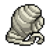 Bandage Wraps | 젬 25개 | 두 번째 |
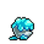 Icing Ironbite | 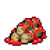 Saucy Logfries | 첫 번째 |
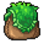 Blunderbag | 젬 30개 | 첫 번째 |
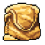 Sandy Satchel | 젬 25개 | 두 번째 |
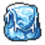 Shivering Sack | 젬 35개 | 세 번째 |
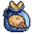 Sizable Food Pouch | 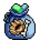 Sizable Materials Pouch | 두 번째 |
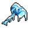 The Ice Breaker | 젬 30개 | 세 번째 |
| Spriggly Storm | 젬 30개 | 세 번째 |
| Blizzard Bow | 젬 30개 | 세 번째 |
| Deuscythe | 젬 35개 | 세 번째 |
| Grey Gatsby | 젬 35개 | 세 번째 |
| Blackhole Bow | 젬 35개 | 세 번째 |
| Eclectic Ordeal | Uninflated Glove | 세 번째 |
| Dementia Rod for Fishing | Big Fish Pouch | 세 번째 |
| Dementia Net | Big Bug Pouch | 세 번째 |
| Dementia Pickaxe | Big Mining Pouch | 세 번째 |
| Dementia Dicer | Big Choppin Pouch | 세 번째 |
| Void Imperium Rod | Large Fish Pouch | 세 번째 |
| Void Imperium Net | Large Bug Pouch | 세 번째 |
| Void Imperium Pik | Large Mining Pouch | 세 번째 |
| Void Imperium Axe | Large Choppin Pouch | 세 번째 |
| Critter Numnums | Soulble Gum | 세 번째 |
| Angler Boots | 젬 25개 | 두 번째 |
| Bandito Boots | 젬 25개 | 두 번째 |
| Cavern Trekkers | 젬 25개 | 두 번째 |
| Logger Heels | 젬 25개 | 두 번째 |
| Sleek Coif | Feral Leathering | 두 번째 |
| Viking Cap | Studded Hide | 두 번째 |
| Witch Hat | Furled Robes | 두 번째 |
| Hide Shirt | 젬 20개 | 첫 번째 |
| Dirty Coal Miner Baggy Soot Pants | 젬 20개 | 첫 번째 |
| Large Food Pouch | Large Materials Pouch | 세 번째 |
| 젬 70개 | — | 두 번째 |
| 젬 70개 | — | 두 번째 |
| Slimsharp Fin | 젬 5개 | 네 번째 |
| Skullslip Hallow | 젬 5개 | 네 번째 |
| Shardsure Leif | 젬 5개 | 네 번째 |
| Knuckle Sabers | 젬 5개 | 네 번째 |
| Meaty Traps | Massive Critter Pouch | 네 번째 |
| Glauss Skull | Massive Soul Pouch | 네 번째 |
| Lustre Rod | Massive Fish Pouch | 네 번째 |
| Lustre Netting | Massive Bug Pouch | 네 번째 |
| Lustre Pickaxe | Massive Mining Pouch | 네 번째 |
| Lustre Logger | Massive Choppin Pouch | 네 번째 |
| Diabolical Flesh Ripper | 젬 5개 | 네 번째 |
| Diabolical Opticule | 젬 5개 | 네 번째 |
| Diabolical Continuit | 젬 5개 | 네 번째 |
| Diabolical Gauntlet | 젬 5개 | 네 번째 |
| Royal Traps | Volumetric Critta Pouch | 네 번째 |
| Luciferian Skull | Volumetric Soul Pouch | 네 번째 |
| Starfire Rod | Volumetric Fish Pouch | 네 번째 |
| Starfire Trim Netting | Volumetric Bug Pouch | 네 번째 |
| Starfire Pickaxe | Volumetric Mining Pouch | 네 번째 |
| Starfire Hatchet | Volumetric Chopping Pouch | 네 번째 |
| Peeper Pouch | 젬 5개 | 네 번째 |
| Volumetric Food Pouch |  Volumetric Matty Pouch Volumetric Matty Pouch | 네 번째 |
| Chef Hat Shoes | 젬 5개 | 네 번째 |
| Sheek Scrubs | 젬 5개 | 네 번째 |
| Deep Sea Galoshes | 젬 5개 | 네 번째 |
| Spaggy Westerados | 젬 5개 | 네 번째 |
| Rough Rockers | 젬 5개 | 네 번째 |
| Fiberous Footings | 젬 5개 | 네 번째 |
| Mark of Member | Member Hoodie | 세 번째 |
| Bullet | FMJ Bullet | 두 번째 |
| 젬 50개 | — | 첫 번째 |
| Diabolical Headcase | 젬 5개 | 네 번째 |
| Diabolical Abdomen | 젬 5개 | 네 번째 |
| Diabolical Trimed Leg Guards | 젬 5개 | 네 번째 |
| Diabolical Toe Tips | 젬 5개 | 네 번째 |
| Murmillo Helm | Damascus Plates | 세 번째 |
| Adornment of the High Priest | Elegantine Robes | 세 번째 |
| Conquistador Plume | Evergreen Wraps | 세 번째 |
| Eco Friendly Oil | 젬 20개 | 첫 번째 |
| Black Tee | 젬 20개 | 첫 번째 |
| Sleek Shank | Steel Band | 첫 번째 |
| Purple Tee | Green Tee | 첫 번째 |